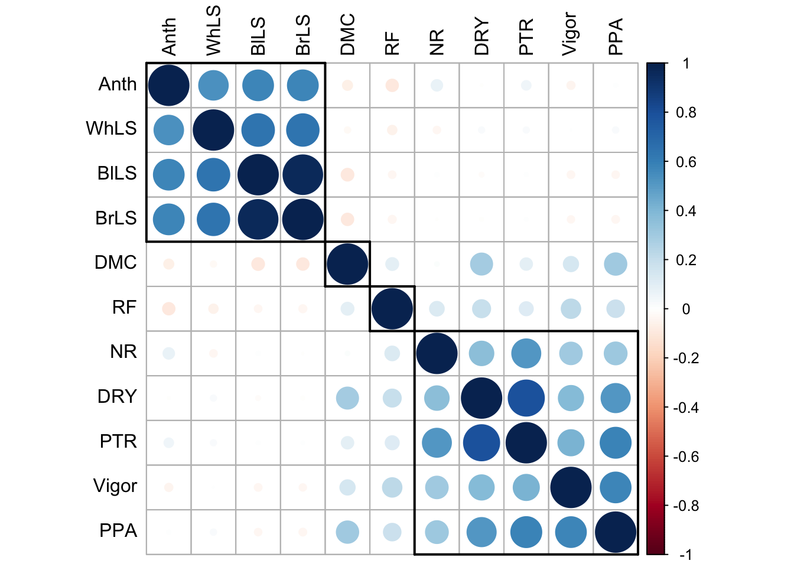

Analise de Componentes Principais e Discriminantes
LucianoRogerio e HenriqueBernardino
2021-11-02
Last updated: 2024-03-06
Checks: 6 1
Knit directory: HenriqueDGen/
This reproducible R Markdown analysis was created with workflowr (version 1.7.1). The Checks tab describes the reproducibility checks that were applied when the results were created. The Past versions tab lists the development history.
The R Markdown file has unstaged changes. To know which version of
the R Markdown file created these results, you’ll want to first commit
it to the Git repo. If you’re still working on the analysis, you can
ignore this warning. When you’re finished, you can run
wflow_publish to commit the R Markdown file and build the
HTML.
Great job! The global environment was empty. Objects defined in the global environment can affect the analysis in your R Markdown file in unknown ways. For reproduciblity it’s best to always run the code in an empty environment.
The command set.seed(20211012) was run prior to running
the code in the R Markdown file. Setting a seed ensures that any results
that rely on randomness, e.g. subsampling or permutations, are
reproducible.
Great job! Recording the operating system, R version, and package versions is critical for reproducibility.
Nice! There were no cached chunks for this analysis, so you can be confident that you successfully produced the results during this run.
Great job! Using relative paths to the files within your workflowr project makes it easier to run your code on other machines.
Great! You are using Git for version control. Tracking code development and connecting the code version to the results is critical for reproducibility.
The results in this page were generated with repository version 5f808d6. See the Past versions tab to see a history of the changes made to the R Markdown and HTML files.
Note that you need to be careful to ensure that all relevant files for
the analysis have been committed to Git prior to generating the results
(you can use wflow_publish or
wflow_git_commit). workflowr only checks the R Markdown
file, but you know if there are other scripts or data files that it
depends on. Below is the status of the Git repository when the results
were generated:
Ignored files:
Ignored: .DS_Store
Ignored: .Rhistory
Ignored: .Rproj.user/
Ignored: data/.DS_Store
Ignored: output/.DS_Store
Ignored: output/Figures/.DS_Store
Untracked files:
Untracked: code/1CapHen.R
Untracked: data.zip
Untracked: output/BlupsHen.txt
Untracked: output/Correlogram.pdf
Untracked: output/Fig10_CircularHeatmapDAGrp.pdf
Untracked: output/Fig1_BarplotsCassavaFoliarDiseaseTraits.pdf
Untracked: output/Fig2_DenplotsCassavaFoliarDiseaseTraits.pdf
Untracked: output/Fig3_DenplotsCassavaAgronomicTraits.pdf
Untracked: output/Fig4_DenplotsBLUPsCassavaFoliarDiseaseTraits.pdf
Untracked: output/Fig5_DenplotsBLUPsCassavaAgronomicTraits.pdf
Untracked: output/Fig6_BarplotAccumulatedVariancesPCFoliarDiseases.pdf
Untracked: output/Fig7_ScatterplotPC1and2CorrelationArrowsFoliarDiseaseResistancePC.pdf
Untracked: output/Fig8_ScatterplotLD1and2CassavaFoliarDiseases3clusters.pdf
Untracked: output/Fig9_BoxplotsBLUPSDAGrpCassavaFoliarDiseases.pdf
Unstaged changes:
Modified: analysis/AnalisesDescritivas.Rmd
Modified: analysis/AnalisesModelosMistos.Rmd
Modified: analysis/Den_IndSH.Rmd
Modified: analysis/IndSel.Rmd
Modified: analysis/PCA_DAPC.Rmd
Modified: output/BLUPsSel.csv
Deleted: output/Correlogram.tiff
Deleted: output/Fig6_BarplotAccumulatedVariancesPCFoliarDiseases.tiff
Deleted: output/Fig9_BoxplotsBLUPSDAGrpCassavaFoliarDiseases.tiff
Modified: output/MediasBLUPs.txt
Modified: output/ShannonWeaverIndex.csv
Note that any generated files, e.g. HTML, png, CSS, etc., are not included in this status report because it is ok for generated content to have uncommitted changes.
These are the previous versions of the repository in which changes were
made to the R Markdown (analysis/PCA_DAPC.Rmd) and HTML
(docs/PCA_DAPC.html) files. If you’ve configured a remote
Git repository (see ?wflow_git_remote), click on the
hyperlinks in the table below to view the files as they were in that
past version.
| File | Version | Author | Date | Message |
|---|---|---|---|---|
| Rmd | 5f808d6 | LucianoRogerio | 2023-11-30 | New Updates |
| html | 5f808d6 | LucianoRogerio | 2023-11-30 | New Updates |
| Rmd | 54268fe | LucianoRogerio | 2023-07-31 | Adding Foliar Retention to final Boxplot |
| html | 54268fe | LucianoRogerio | 2023-07-31 | Adding Foliar Retention to final Boxplot |
| Rmd | fef5cf2 | LucianoRogerio | 2023-07-26 | Adicao Dados 2022 |
| html | fef5cf2 | LucianoRogerio | 2023-07-26 | Adicao Dados 2022 |
| html | 49c6d7c | LucianoRogerio | 2022-07-21 | Update Figures |
| Rmd | 963096a | LucianoRogerio | 2022-04-19 | Update Website |
| html | 963096a | LucianoRogerio | 2022-04-19 | Update Website |
| Rmd | 745d17f | LucianoRogerio | 2022-04-19 | Update Website |
| html | 745d17f | LucianoRogerio | 2022-04-19 | Update Website |
| Rmd | e08b1a6 | LucianoRogerio | 2022-04-05 | Last Analysis |
| html | e08b1a6 | LucianoRogerio | 2022-04-05 | Last Analysis |
| Rmd | e020351 | LucianoRogerio | 2022-03-29 | Update Henrique Analysis |
| html | e020351 | LucianoRogerio | 2022-03-29 | Update Henrique Analysis |
| Rmd | 89ac868 | HenriqueBernardino | 2022-01-29 | Análise de Correlações |
| html | 89ac868 | HenriqueBernardino | 2022-01-29 | Análise de Correlações |
| Rmd | d124c30 | LucianoRogerio | 2021-12-07 | Update of the webpage to english writting |
| html | d124c30 | LucianoRogerio | 2021-12-07 | Update of the webpage to english writting |
| Rmd | 73653b1 | LucianoRogerio | 2021-12-07 | fix the buttons at the final of each of the webpages |
| html | 73653b1 | LucianoRogerio | 2021-12-07 | fix the buttons at the final of each of the webpages |
| Rmd | f272038 | LucianoRogerio | 2021-12-07 | Update of the analysis and website layout |
| html | f51cdc6 | LucianoRogerio | 2021-11-18 | Add the Dendrogram analysis |
| Rmd | b30f532 | LucianoRogerio | 2021-11-16 | Add a header Introduction to PCA DAPC Analysis |
| html | b30f532 | LucianoRogerio | 2021-11-16 | Add a header Introduction to PCA DAPC Analysis |
| Rmd | cbf63bd | LucianoRogerio | 2021-11-16 | Add Dendrogram |
| html | cbf63bd | LucianoRogerio | 2021-11-16 | Add Dendrogram |
| html | 1faf8c1 | LucianoRogerio | 2021-11-09 | DAPC Analysis finished |
| Rmd | efcce5f | LucianoRogerio | 2021-11-09 | Merge branch ‘main’ of https://github.com/LucianoRogerio/HenriqueDGen |
| Rmd | e89306d | LucianoRogerio | 2021-11-09 | DAPC Analysis finished |
| html | e89306d | LucianoRogerio | 2021-11-09 | DAPC Analysis finished |
| Rmd | 33422ee | LucianoRogerio | 2021-11-09 | DAPC Analysis finished |
| html | 33422ee | LucianoRogerio | 2021-11-09 | DAPC Analysis finished |
| Rmd | 97d638d | LucianoRogerio | 2021-11-02 | Update of html links |
| html | 97d638d | LucianoRogerio | 2021-11-02 | Update of html links |
Analysis of Principal Components
This previoulsy analysis were performed aiming to select the best number of principal components. The phenotypic data were centered using the function scale to remove the effect of trait variance at the principal components analysis. The selection criteria for the number of principal components were variance bigger than one.
suppressMessages(library(tidyverse))
suppressMessages(library(adegenet))
library(reactable)
library(here)here() starts at /Users/luciano/Documents/GitHub/HenriqueDGenBLUPS <- readRDS(here::here("output", "BLUPsDiseaseAgro.rds"))
BLUPS[, -1] <- scale(BLUPS[ , -1], center = T, scale = T)
BLUPS[is.na(BLUPS)] <- 0Estimation of the Variance acumulated and selection of the number of Principal Components
PCA <- prcomp(BLUPS[,-1])
Perc <- 100*PCA$sdev^2/sum(PCA$sdev^2)
PercAc <- as.vector(rep(NA, times = length(Perc)))
for(i in 1:length(Perc)) {
PercAc[i] <- sum(Perc[1:i])
names(PercAc)[i] <- i
}
write.table(PCA$rotation, file = here::here("output", "CorrelacoesPCAseTraits.csv"), sep = ",", quote = F)Table 1. Variance explained by each principal component
Fig 1. Barplot of the Accumulated variances of the principal components for foliar diseases.

This part we prepare the print location for the labels of foliar disease traits
PointPCA1 <- as.data.frame(PCA$x)
ArrowPCA1 <- as.data.frame(PCA$rotation)
LabelsPCA1 <- 6*ArrowPCA1
LabelsPCA1[1, 1:2] <- c(-0.6, -1.8)
LabelsPCA1[2, 2] <- c(-1.8)
LabelsPCA1[3, 2] <- c(-2.5)
LabelsPCA1[4, 1] <- c(-0.8)
LabelsPCA1[5, 1:2] <- c(1.9, -0.6)
LabelsPCA1[6, 1] <- c(1.3)
LabelsPCA1[7, 2] <- c(-0.4)
LabelsPCA1[9, 2] <- c(0)
LabelsPCA1[10, 1:2] <- c(2, -1.7)
LabelsPCA1[11, 1:2] <- c(2.3, -1)Fig 2. Scatterplot of the Principal components 1 and 2 with the correlation arrows of the foliar disease resistance with the principal components.

Table 2. Analise de correlação dos Caracteristicas
Correlogram
library(corrplot)corrplot 0.92 loaded#pdf(file = here::here("output", "Correlogram.pdf"), height = 10/inch, width = 10/inch)
#tiff(filename = here::here("output", "Correlogram.tiff"), height = 10, width = 10, compression = "lzw",
# units = "cm", res = 350)
DadosManchasFoliares %>% dplyr::select(-CLONE) %>% cor(use = "complete.obs") %>%
corrplot::corrplot(tl.col = "black",order = "hclust") %>%
corrRect(name = c("Anth", "DMC", "RF", "NR", "PPA"))
| Version | Author | Date |
|---|---|---|
| 5f808d6 | LucianoRogerio | 2023-11-30 |
#dev.off()Discriminant Analysis of Principal Components
library(adegenet); library(ggplot2)
BLUPS <- readRDS(here::here("output", "BLUPsDiseaseAgro.rds"))
BLUPS[, -1] <- scale(BLUPS[, -1], center = T, scale = T)
BLUPS[is.na(BLUPS)] <- 0
rownames(BLUPS) <- BLUPS$CLONE
BLUPS$CLONE <- NULL
set.seed(1)
DAPCHen <- find.clusters(BLUPS, n.pca = 3, max.n.clust = 20, choose.n.clust = F, criterion = "diffNgroup")
ClassDAPCHen <- DAPCHen$grp
DAPCHenGraph <- dapc(BLUPS, grp = ClassDAPCHen, n.pca = 3, n.da = 2)
saveRDS(DAPCHenGraph, here::here("output", "DAPCAn.rds"))
DAPCHenGraph <- readRDS(file = here::here("output", "DAPCAn.rds"))
VarDAPC <- 10*sum(DAPCHenGraph$pca.eig[1:3])*DAPCHenGraph$var*DAPCHenGraph$eig/sum(DAPCHenGraph$eig)
DAPCIndPoint <- data.frame(DAPCHenGraph$ind.coord, grp = DAPCHenGraph$grp)
DAPCGrpEllip <- data.frame(DAPCHenGraph$grp.coord, grp = as.character(1:3))
ArrowDAPC <- as.data.frame(DAPCHenGraph$var.contr)
LabelsDAPC <- data.frame(ArrowDAPC*7)
LabelsDAPC[1, 2] <- c(1.1)
LabelsDAPC[2, 1] <- c(0.4)
LabelsDAPC[3, 1] <- c(-0.2)
LabelsDAPC[5, 2] <- c(0.3)
LabelsDAPC[6, 2] <- c(-0.2)
LabelsDAPC[7, 1] <- c(-0.3)
LabelsDAPC[8, 2] <- c(0.7)
LabelsDAPC[9, 2] <- c(-0.35)
LabelsDAPC[10, 1] <- c(1.95)
LabelsDAPC[11, 2] <- c(-0.3)Fig 3. Scatterplot of the first and second linear discriminant function of the discriminant analysis of principal components for cassava foliar diseases, with three clusters
Warning: Using `size` aesthetic for lines was deprecated in ggplot2 3.4.0.
ℹ Please use `linewidth` instead.
This warning is displayed once every 8 hours.
Call `lifecycle::last_lifecycle_warnings()` to see where this warning was
generated.
suppressMessages(library(reshape2))
BLUPS <- readRDS(here::here("output", "BLUPsDiseaseAgro.rds"))
DAPCHenGraph<- readRDS(here::here("output", "DAPCAn.rds"))
rownames(BLUPS) <- BLUPS$CLONE
BLUPS <- BLUPS[BLUPS$CLONE%in%names(DAPCHenGraph$grp),]
BLUPS$Grp <- DAPCHenGraph$grp
BLUPSBoxplot <- reshape2::melt(BLUPS, variable.name = "Trait", value.name = "Y", id.vars = c("CLONE", "Grp"))Fig 4. Boxplots of the BLUPS of the accessions grouped by the discriminant analysis of principal components for cassava foliar diseases traits
Attaching package: 'data.table'The following objects are masked from 'package:reshape2':
dcast, meltThe following objects are masked from 'package:lubridate':
hour, isoweek, mday, minute, month, quarter, second, wday, week,
yday, yearThe following objects are masked from 'package:dplyr':
between, first, lastThe following object is masked from 'package:purrr':
transpose
sessionInfo()R version 4.3.2 (2023-10-31)
Platform: aarch64-apple-darwin20 (64-bit)
Running under: macOS Sonoma 14.3.1
Matrix products: default
BLAS: /Library/Frameworks/R.framework/Versions/4.3-arm64/Resources/lib/libRblas.0.dylib
LAPACK: /Library/Frameworks/R.framework/Versions/4.3-arm64/Resources/lib/libRlapack.dylib; LAPACK version 3.11.0
locale:
[1] en_US.UTF-8/en_US.UTF-8/en_US.UTF-8/C/en_US.UTF-8/en_US.UTF-8
time zone: America/Sao_Paulo
tzcode source: internal
attached base packages:
[1] stats graphics grDevices utils datasets methods base
other attached packages:
[1] ggpubr_0.6.0 data.table_1.15.0 multcompView_0.1-9 reshape2_1.4.4
[5] corrplot_0.92 here_1.0.1 reactable_0.4.4 adegenet_2.1.10
[9] ade4_1.7-22 lubridate_1.9.3 forcats_1.0.0 stringr_1.5.1
[13] dplyr_1.1.4 purrr_1.0.2 readr_2.1.5 tidyr_1.3.1
[17] tibble_3.2.1 ggplot2_3.5.0 tidyverse_2.0.0
loaded via a namespace (and not attached):
[1] tidyselect_1.2.0 viridisLite_0.4.2 farver_2.1.1 fastmap_1.1.1
[5] promises_1.2.1 digest_0.6.34 timechange_0.3.0 mime_0.12
[9] lifecycle_1.0.4 cluster_2.1.6 ellipsis_0.3.2 magrittr_2.0.3
[13] compiler_4.3.2 rlang_1.1.3 sass_0.4.8 tools_4.3.2
[17] igraph_2.0.2 utf8_1.2.4 yaml_2.3.8 ggsignif_0.6.4
[21] knitr_1.45 labeling_0.4.3 htmlwidgets_1.6.4 plyr_1.8.9
[25] abind_1.4-5 workflowr_1.7.1 withr_3.0.0 grid_4.3.2
[29] fansi_1.0.6 git2r_0.33.0 xtable_1.8-4 colorspace_2.1-0
[33] scales_1.3.0 MASS_7.3-60.0.1 cli_3.6.2 rmarkdown_2.25
[37] vegan_2.6-4 crayon_1.5.2 generics_0.1.3 rstudioapi_0.15.0
[41] tzdb_0.4.0 ape_5.7-1 cachem_1.0.8 splines_4.3.2
[45] parallel_4.3.2 vctrs_0.6.5 Matrix_1.6-5 carData_3.0-5
[49] jsonlite_1.8.8 car_3.1-2 hms_1.1.3 rstatix_0.7.2
[53] seqinr_4.2-36 crosstalk_1.2.1 jquerylib_0.1.4 glue_1.7.0
[57] reactR_0.5.0 cowplot_1.1.3 stringi_1.8.3 gtable_0.3.4
[61] later_1.3.2 munsell_0.5.0 pillar_1.9.0 htmltools_0.5.7
[65] R6_2.5.1 rprojroot_2.0.4 evaluate_0.23 shiny_1.8.0
[69] lattice_0.22-5 highr_0.10 backports_1.4.1 broom_1.0.5
[73] httpuv_1.6.14 bslib_0.6.1 Rcpp_1.0.12 nlme_3.1-164
[77] permute_0.9-7 mgcv_1.9-1 whisker_0.4.1 xfun_0.42
[81] fs_1.6.3 pkgconfig_2.0.3